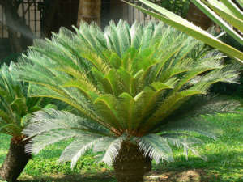

|  |
|---|
Cica JaponicaCiça origem A Cycas revoluta é originária de regiões da China, do Japão e da Indonésia - e se adaptou muito bem no clima do Brasil. ... A Cycas revoluta é um arbusto pertence à família Cycadaceae, nativa de Fujian, na China, de Kyushu e Ilhas Ryukyu, no Japão e, também da Indonésia. Voltar |
|---|